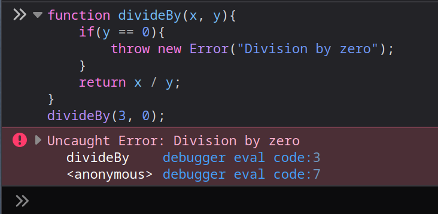

Il arrive de devoir gérer des problèmes dans notre code
function divideBy(x, y){
return x / y; // Que faire si y = 0 ?
}
function fetchData(url){
return fetch(url); // Que faire si l'URL est invalide ? Si le serveur ne répond pas ?
}
Certaines erreurs peuvent survenir au sein même du code (exemple de la division par zéro). D'autres peuvent venir de facteurs externes (par exemple un serveur distant qui ne répond pas)
Une exception est un moyen de gérer ces erreurs.
function divideBy(x, y){
if(y == 0){
throw new Error("Division by zero");
}
return x / y;
}
Ce code lance une exception si l'opération est invalide.
Lancer une exception arrête l'exécution du code, de la même manière qu'un return. Dans ce cas aucune valeur ne sera retournée, et la fonction lancera une exception.
|
 |
Une exception qui n'est pas attrapée (catch) arrêtera l'exécution du script et s'affichera dans la console.
function mean(array){
if(array.length == 0){
throw new Error("Mean of empty table");
}
let sum = 0;
for(const x of array) sum += x;
return sum / array.length;
}
const array = [];
try {
console.log("Mean of array is : ", mean(array));
} catch (error) {
console.log("The function returned an error : ", error);
// Affichera "The function returned an error : Mean of empty table"
}
Lex exceptions peuvent être attrapées avec un bloc try ... catch. Si le code dans le bloc try provoque une exception, le bloc catch sera exécuté et le script continuera après le bloc.
En pratique, les exceptions doivent être réservées pour des cas particuliers, où la fonction ne peut pas continuer.
function isAdult(age){
if(age < 18){ // Mauvaise idée, il ne s'agit pas ici d'une erreur.
throw new Error("Not an adult");
}
return true;
}
L'utilisation de Error délègue la responsabilité de traiter l'erreur à une autre partie du script
Il existe plusieurs types d'exceptions
function getArrayValue(array, index){
if(index >= array.length){
throw new RangeError("Access out of bounds"); // Pour des indexes invalides
}
return array[index];
}
function addNumberToArray(array, number){
if(typeof number != "number"){
throw new TypeError("number has not the right type"); // Pour des types invalides
}
array.push(number);
}
Il en existe encore d'autres, pour d'autres cas plus spécifiques
Site officiel :
https://developer.mozilla.org/en-US/docs/Web/JavaScript/Reference/Statements/throw
https://developer.mozilla.org/en-US/docs/Web/JavaScript/Reference/Statements/try...catch